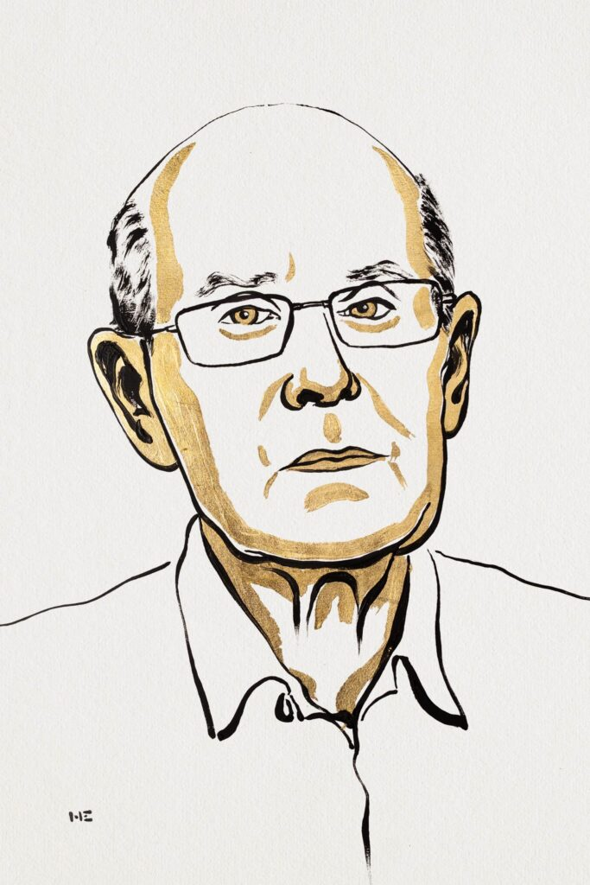
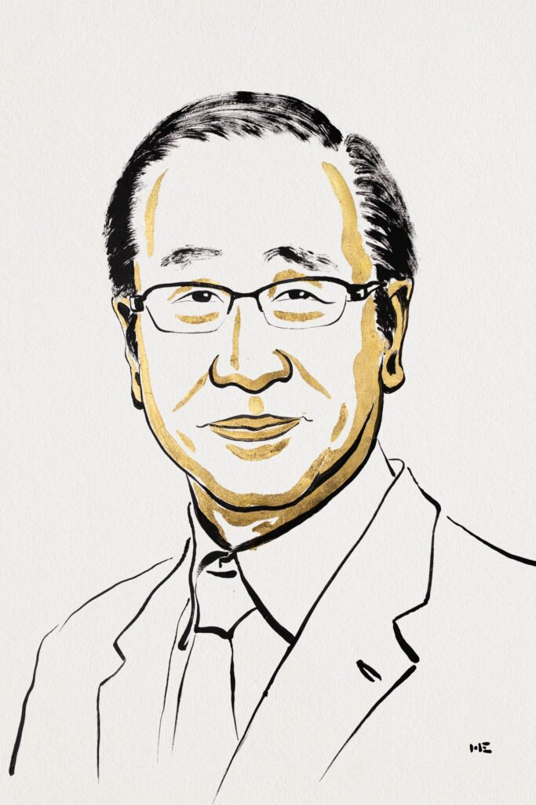
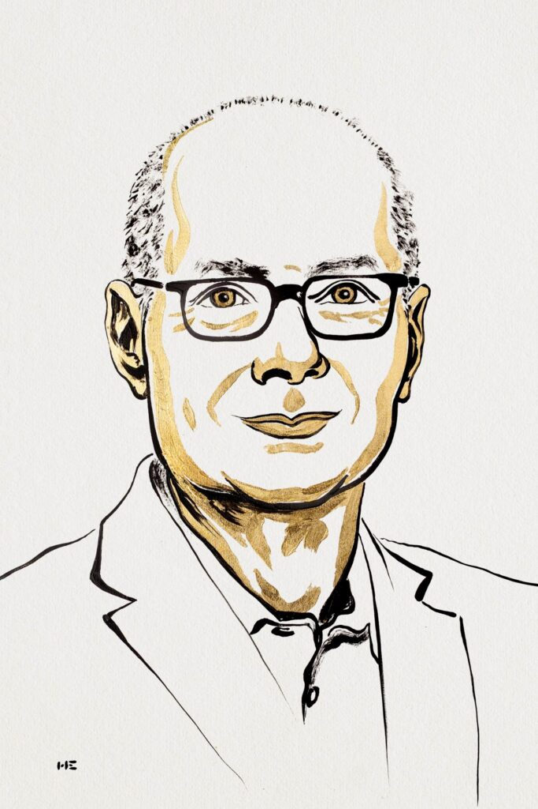

Premio Nobel de Química
Historia del Premio
Los premios que distribuye la Fundación creada por Alfred Nobel (1833-1896) recompensan a las personas e instituciones que más hayan contribuido al progreso y bienestar de la humanidad en los
campos de la física, la química, la medicina y la fisiología, la literatura, la paz y la economía.
Los Premios Nobel son reconocidos como las más prestigiosas distinciones que se pueden recibir en estos ámbitos. La Fundación Nobel fue creada el 29 de Junio de 1900 cumpliendo la
voluntad del propio Alfred Nobel que se sentía culpable por su responsabilidad como empresario enriquecido a través de una industria productora de dinamita cuyo principal mercado
era la minería, pero también la guerra.
Desde 1902, los premios los entrega el Rey de Suecia. Los premios se conceden en una ceremonia celebrada anualmente en la Sala de Conciertos de Estocolmo, siguiendo el banquete en el
Ayuntamiento el 10 de diciembre, los nombres de los laureados, sin embargo, suelen anunciarlos en octubre los diversos comités e instituciones que actúan como tribunales de selección de los premios.
Junto con los diplomas se entrega un importante premio económico, actualmente unos 10 millones de coronas suecas (algo más de un millón de euros).
La finalidad de esta suma es evitar las preocupaciones económicas del laureado, para que así pueda desarrollar mejor sus futuros trabajos, promoviendo así el desarrollo de la cultura, la ciencia y la tecnología en el mundo.
Ganores del premio Nobel de Química 2025
La Real Academia Sueca de Ciencias ha decidido otorgar el Premio Nobel de Química 2025 a:
- Universidad Susumu Kitagawa.
Kioto, Japón. - Universidad Richard Robson.
Melbourne, Australia. - Universidad Omar M. Yaghi.
California, Berkeley, EE. UU.
Los galardonados con el Premio Nobel de Química 2025 han creado construcciones moleculares con grandes espacios por los que pueden fluir gases y otros productos químicos. Estas construcciones, estructuras
metal-orgánicas, pueden utilizarse para extraer agua del aire del desierto, capturar dióxido de carbono, almacenar gases tóxicos o catalizar reacciones químicas.
- Susumu Kitagawa
- Richard Robson
- Omar Yaghi
Ellos reciben el Premio Nobel de Química 2025. Han desarrollado una nueva forma de arquitectura molecular. En sus construcciones, los iones metálicos funcionan como piedras angulares unidas por largas
moléculas orgánicas (a base de carbono). Juntos, los iones metálicos y las moléculas se organizan para formar cristales que contienen grandes cavidades. Estos materiales porosos se denominan
estructuras metal-orgánicas (MOF). Variando los bloques de construcción usados en los MOFs, los químicos pueden diseñarlos para capturar y almacenar sustancias específicas. Los MOF también pueden
impulsar reacciones químicas o conducir electricidad.
"Los marcos metal-orgánicos tienen un potencial enorme, trayendo oportunidades antes imprevistas para materiales hechos a medida con nuevas funciones."
Tras los descubrimientos pioneros de los galardonados, los químicos han construido decenas de miles de MOFs diferentes. Algunos de estos pueden contribuir a resolver algunos de los mayores desafíos de la humanidad, con aplicaciones que incluyen la separación de PFAS del agua, la descomposición de rastros de fármacos en el medio ambiente, la captura de dióxido de carbono o la captación de agua del aire del desierto.
Richard Robson: el precursor
La historia arranca en 1989, cuando Richard Robson combinó iones de cobre con una molécula tetradentada (cuatro brazos), generando un cristal regular con espacios internos —algo así como un diamante con cavidades. Aunque Robson comprendió con prontitud el potencial de su invención, su estructura resultó frágil y susceptible de colapso, lo que limitó su aplicación inmediata.
 Más acerca de él...Susumu Kitagawa: la estabilidad y la flexibilidad
A partir de principios de la década de 1990, Susumu Kitagawa desarrolló por su parte materiales porosos más robustos. Demostró que los gases podían entrar y salir sin destruir el armazón molecular, e incluso anticipó que algunos MOF podrían ser flexibles —es decir, cambiar de forma cuando se cargan o descargan moléculas—. Kitagawa apostó por ver utilidad en lo que parecía inútil: estructuras porosas sin función clara inmediata, pero con potencial.
 Más acerca de él...Omar Yaghi: diseño racional y diversificación funcional
Desde la década de 1990, Omar Yaghi introdujo el enfoque de diseño racional para construir y modificar MOF con propiedades específicas. Uno de sus logros más emblemáticos fue la llamada MOF-5, capaz de mantenerse estable incluso cuando estaba vacía, y con cavidades de tamaño impresionante. Yaghi avanzó también en la diversificación de variantes del MOF: cambiar los “ladrillos” moleculares permite ajustar sus propiedades.
 Más acerca de él...Ganores del premio Nobel de Química 2025
La Real Academia Sueca de Ciencias es la encargada de seleccionar a los laureados en química. Los criterios principales son:
- Originalidad del descubrimiento o investigación.
- Impacto en el progreso de la química o en la humanidad.
- Aplicabilidad y relevancia a largo plazo.
Catalina Biglione, investigadora titular de la Unidad de Materiales Porosos Avanzados de IMDEA Energía, dijo en declaraciones a Science Media Center que este reconocmiento es "bien merecido".
La investigadora destacó que durante sus más de cuatro años de trabajo en este campo pudo "comprobar su extraordinaria versatilidad: desde la captura de contaminantes, hasta su uso en aplicaciones de
energía para pilas de combustibles o incluso en tratamientos innovadores dentro de la nanomedicina".
"Este premio no solo celebra un avance científico, sino que destaca una plataforma tecnológica con un potencial transformador."
Curiosidades
- Marie Curie sigue siendo la única mujer que ha ganado un Nobel en dos campos diferentes.
- Linus Pauling también recibió el Nobel de la Paz, siendo el único en recibir dos Nobel no compartidos en campos diferentes.
- El Premio Nobel de Química ha reconocido avances en química verde, nanotecnología y bioquímica moderna.
- En más de 120 años, solo un pequeño porcentaje de ganadores han sido mujeres.